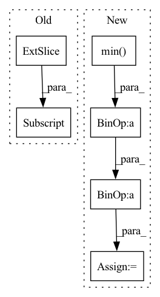

Pattern ID :30254
Before Change
vmax = np.percentile(disp_resized_np, 95)
normalizer = mpl.colors.Normalize(vmin=disp_resized_np.min(), vmax=vmax)
mapper = cm.ScalarMappable(norm=normalizer, cmap="magma")
colormapped_im = (mapper.to_rgba(disp_resized_np)[:, :, :3] * 255).astype(np.uint8)
return colormapped_im
def channelData(layer)://convert gimp image to numpyAfter Change
// Saving colormapped depth image
disp_resized_np = disp_resized.squeeze().cpu().numpy()
vmax = np.percentile(disp_resized_np, 95)
vmin = disp_resized_np.min()
disp_resized_np = vmin + (disp_resized_np - vmin) * (vmax - vmin) / (disp_resized_np.max() - vmin)
disp_resized_np = (255 * (disp_resized_np - vmin) / (vmax - vmin)).astype(np.uint8)
colormapped_im = cv2.applyColorMap(disp_resized_np, cv2.COLORMAP_HOT)
colormapped_im = cv2.cvtColor(colormapped_im, cv2.COLOR_BGR2RGB)
// normalizer = mpl.colors.Normalize(vmin=disp_resized_np.min(), vmax=vmax)
// mapper = cm.ScalarMappable(norm=normalizer, cmap="magma")In pattern: SUPERPATTERN
Frequency: 3
Non-data size: 6
Instances Fragment ID: 89725521
Project Name: kritiksoman/gimp-ml
Commit Name: 07de86337c7e38c57c56de4a17c17a290dc63579
Time: 2020-05-09
Author: 33869270+kritiksoman@users.noreply.github.com
File Name: gimp-plugins/monodepth.py
M Class Name: AnonimousClass
N Class Name: AnonimousClass
M Method Name: getMonoDepth(1)
N Method Name: getMonoDepth(1)
M Parent Class:
N Parent Class:
M File Name: gimp-plugins/monodepth.py
N File Name: gimp-plugins/monodepth.py
M Start Line: 65
M End Line: 69
N Start Line: 66
N End Line: 72
Before Change
frame_ix.unsqueeze(1),
self.id[ix].unsqueeze(1)), dim=1)
else:
grand_matrix = torch.cat((self.xyz[ix, :] ,
self.phot[ix].unsqueeze(1),
frame_ix.unsqueeze(1)), dim=1)
After Change
The first frame is assumed to be 0. If it"s negative go to the lowest negative.
if frame_ix.numel() != 0:
ix_f = min(0, frame_ix.min() )
if self.num_emitter != 0:
grand_matrix_list = torch_cpp.split_tensor(grand_matrix, frame_ix, ix_f, ix_l)
else:
If there is absolutelty nothing to split we may want to have a list of empty sets of emitters.
This only applies if ix_l is not inferred (i.e. -1).
Otherwise we will have a one element list with an empty emitter set.
if ix_l == -1:
grand_matrix_list = [grand_matrix]
else:
grand_matrix_list = [grand_matrix] * (ix_l - ix_f + 1)
em_list = []
if self.id is not None: Fragment ID: 89725384
Project Name: turagalab/decode
Commit Name: bddf5aec0672cd591e0c2673951126d3826781a5
Time: 2019-03-06
Author: gitdev@LRM.photo
File Name: deepsmlm/generic/emitter.py
M Class Name: EmitterSet
N Class Name: EmitterSet
M Method Name: split_in_frames(3)
N Method Name: split_in_frames(3)
M Parent Class:
N Parent Class:
M File Name: deepsmlm/generic/emitter.py
N File Name: deepsmlm/generic/emitter.py
M Start Line: 49
M End Line: 77
N Start Line: 74
N End Line: 108
Before Change
def _compute_matrix_power(M, p, eps, order=True):
[D, V] = torch.linalg.eigh(M)
if order:
posInd1 = torch .nonzero(torch.gt(D, eps))[:, 0]
D = D[posInd1]
V = V[:, posInd1]
M_p = torch.matmul(torch.matmul(V, torch.diag(torch.pow(D, p))), V.t())
return M_p
After Change
def _compute_matrix_power(M, p, eps):
try:
M_smallest_eig = torch.relu(-torch.min(torch.real(torch.linalg.eigvals(M))) ) + eps
except:
print()
M = M + M_smallest_eig * torch.eye(M.shape[0], dtype=torch.double, device=M.device).float() Fragment ID: 89725381
Project Name: jameschapman19/cca_zoo
Commit Name: 10ca4c4ff40d7260284ecaa7b49cbb6b6308ddb7
Time: 2021-06-17
Author: james.chapman.19@ucl.ac.uk
File Name: cca_zoo/deepmodels/objectives.py
M Class Name: AnonimousClass
N Class Name: AnonimousClass
M Method Name: _compute_matrix_power(3)
N Method Name: _compute_matrix_power(4)
M Parent Class:
N Parent Class:
M File Name: cca_zoo/deepmodels/objectives.py
N File Name: cca_zoo/deepmodels/objectives.py
M Start Line: 7
M End Line: 13
N Start Line: 8
N End Line: 14